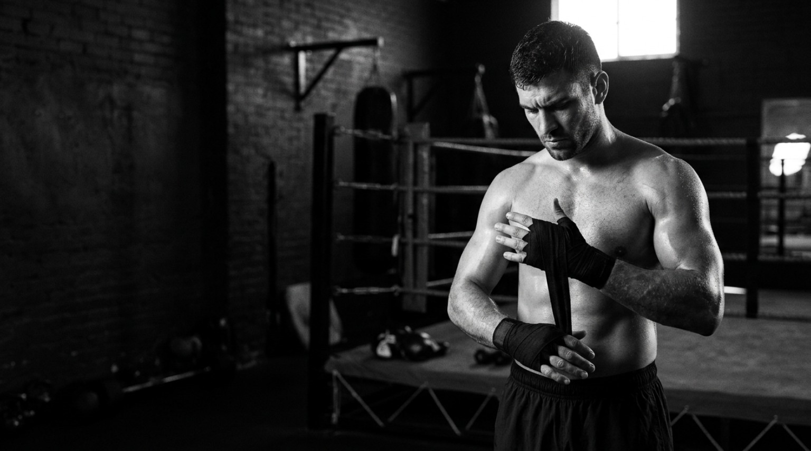

GUTO OLIVEIRA
Nutrição esportiva com foco em individualidade, organização e evolução. Cada estratégia parte do contexto da pessoa — objetivos, rotina, treino e momento.
GUTO OLIVEIRA · ROUND 1

Nutrição esportiva para quem treina, compete e busca evolução. Estratégia, consistência e acompanhamento para transformar rotina em performance.
O ROUND 1 nasce de uma ideia simples: saúde é a base de qualquer performance sustentável. O acompanhamento une nutrição, rotina e as demandas reais de quem treina.
Nutrição esportiva com foco em individualidade, organização e evolução. Cada estratégia parte do contexto da pessoa — objetivos, rotina, treino e momento.

Um plano alimentar não existe isolado. Ele precisa conversar com seus treinos, sua rotina, seus horários e sua realidade.
Estratégias para sustentar energia, treino e recuperação ao longo da rotina.
Objetivos de massa muscular e redução de gordura com saúde e individualidade.
Nutrição pensada para respeitar descanso, adaptação e consistência.
Treinos de combate têm demandas específicas. A alimentação precisa acompanhar intensidade, recuperação e organização da rotina sem transformar o plano em algo impossível de seguir.
Performance é construída no conjunto: treino, alimentação, recuperação e decisões repetidas ao longo do tempo.
O primeiro passo fica mais fácil quando você sabe o caminho.
Comece sua jornada de evolução com estratégia, consistência e acompanhamento.